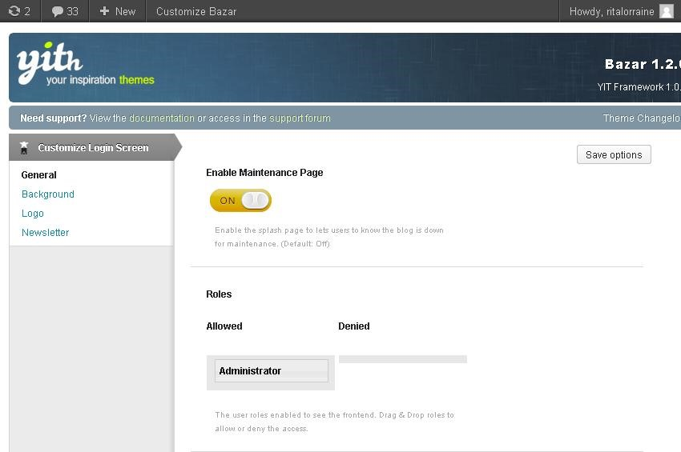
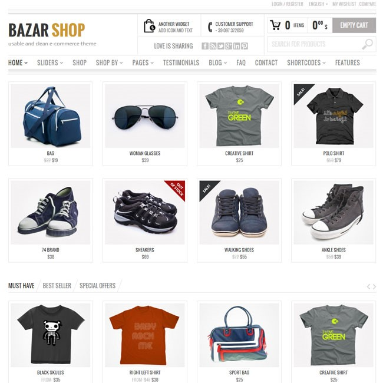
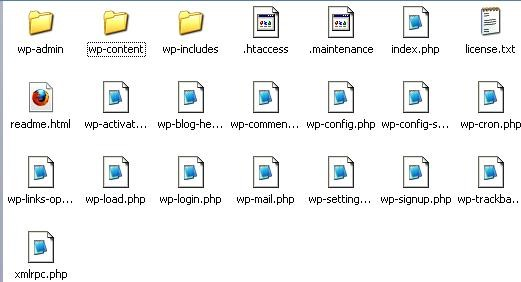
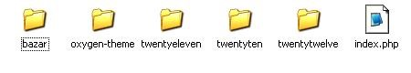
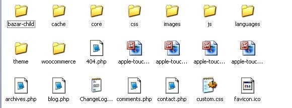
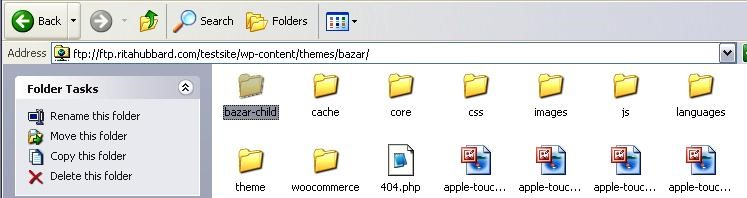
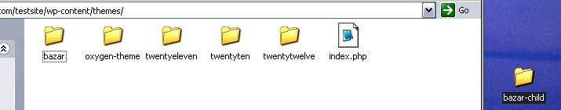
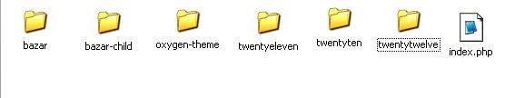
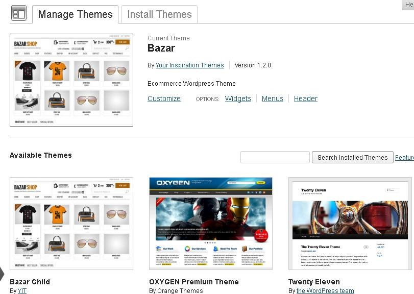

In this section, you will learn how to set your site to Maintenance Mode (without locking yourself out) and activate the Child Theme.
Setting Your Site to Maintenance Mode – Your site may be up and running, but you’re probably not ready to have users register, bid or purchase. To prevent these activities, just set your site to Maintenance Mode. Scroll to the left sidebar of your WP dashboard, click on Bazar and choose “Maintenance Mode” from the drop-down. You will see this screen:

***WARNING! To activate “Maintenance Mode”, drag the “Enable Maintenance Page” button to the ON position (shown above). But BEFORE YOU CLICK SAVE, you MUST drag the Administrator Button to the “Allowed” position (shown). If you do not “allow” the administrator (YOU!) access to the site, you will lock yourself out of your own site.
IF YOU SOMEHOW MANAGE TO LOCK YOURSELF OUT OF YOUR SITE, you will need to open a ticket at YIThemes for help getting back in.
USING THE CHILD THEME

As you customize, you will make many changes. However, it is NEVER RECOMMENDED to make any changes to core files because each time a theme update is released, your changes will be over-written and you’ll have to start all over again.
For this reason, we’ve included a Child Theme identical to the Bazar Parent theme which allows you to make changes without fear that your hard work and customizations will be over-written.
The Child Theme must be activated via FTP. Here’s how:
First, open your FTP files. If you’ve forgotten how to do this, just follow the instructions in Step One, Item #7b of this manual to understand how to get to your FTP files.
Find your Bazar Shop folder and double-click to find WP-Admin, WP-Content, WP-Includes.

Now double-click on “WP-Content”, then double-click on “Themes” to find the Bazar folder:

Now double-click to open “Bazar” and notice the “Bazar-child” theme inside. Drag the Bazar-child folder to your desktop.

Now click on the GREEN “BACK” BUTTON on your FTP browser.

You should arrive back at this screen:

Drag the child-theme from your desktop (see example below) to your FTP files.

CAREFUL! Be sure that you DON’T DRAG THE FILE INSIDE ANY OF THE FOLDERS in the FTP. The child-theme should stand alone, like so:

CLOSE YOUR FTP FILES, go to your Wordpress Admin panel, click on “Themes”, and see Bazar-Child as a theme option:

ACTIVATE YOUR BAZAR CHILD THEME by clicking it to make it appear in the top of the page as the “current theme”. Then click the “Activate” button.
All done! Now on to Step Four.